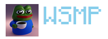

WSenD Survival Multiplayer Public
Discord - Twitch
Inicio
IP
IP Java: 147.185.221.18:1170
IP Bedrock: 147.185.221.18
Puerto: 1211
Lore (by Diego250x)
Cronologías:
Episodio 1: Año 0 - 5
Episodio 2: Año 5 - 15
Episodio 3: Año 15 - 30
Episodio 4: Año 30 - 35
Episodio 1:
Todo comenzó en el universo 72 este era vació y aburrido su origen fue una partición del universo 52 por un duelo que tuvo el dios Kesius (rey del universo 72) y el dios Albert (rey del universo 52), el sueño de Kesius siempre fue tener su propio universo para manipularlo a su gusto pero los dioses del Olimpo nunca le dieron uno no fue hasta que un día hablando Albert decidió retarlo a un duelo a muerte y si Albert ganaba Kesius tenia que humillarse frente a la diosa mas guapa y si Kesius ganaba Albert le daba la mitad de su universo
Estoy escribiendo el resto :p
Con mucho de Diego250x